Time series regression - Store sales forecasting, Part 1
Author
Ahmet Zamanis
Introduction
This is a report on time series analysis & regression modeling, performed in Python, mainly with the Darts library. The dataset is from the Kaggle Store Sales - Time Series Forecasting competition. The data consists of daily sales data for an Ecuadorian supermarket chain between 2013 and 2017. This is Part 1 of the analysis, which will focus only on forecasting the daily national sales of the chain, across all stores and categories. In Part 2, we will forecast the sales in each category - store combination as required by the competition, and attempt various hierarchical reconciliation techniques.
The main information source used extensively for this analysis is the textbook Forecasting: Principles and Practice, written by Rob J. Hyndman and George Athanasopoulos. The book is the most complete source on time series analysis & forecasting I could find. It uses R and the tidyverts libraries in its example code.
Data preparation
The data is split into several .csv files. train.csv and test.csv are the main datasets, consisting of daily sales data. The training data ranges from 01-01-2013 to 15-08-2017, and the testing data consists of the following 15 days, in August 2017. We won’t do a competition submission in Part 1, so we won’t load the testing data.
# View the daily sales datadf_train.head(5)
id
date
store_nbr
family
sales
onpromotion
0
0
2013-01-01
1
AUTOMOTIVE
0.0000
0
1
1
2013-01-01
1
BABY CARE
0.0000
0
2
2
2013-01-01
1
BEAUTY
0.0000
0
3
3
2013-01-01
1
BEVERAGES
0.0000
0
4
4
2013-01-01
1
BOOKS
0.0000
0
For each day, we have the sales in each store (out of a possible 54) and each product category (out of a possible 33). This amounts to 1782 time series that need to be forecasted for the competition, but in Part 1 of this analysis, we will keep it simple and only forecast the national sales in each day, in all categories.
onpromotion is the number of items on sale that day, in that category & store.
stores.csv contains more information about each store: The city, state, store type and store cluster.
df_stores.head(5)
store_nbr
city
state
type
cluster
0
1
Quito
Pichincha
D
13
1
2
Quito
Pichincha
D
13
2
3
Quito
Pichincha
D
8
3
4
Quito
Pichincha
D
9
4
5
Santo Domingo
Santo Domingo de los Tsachilas
D
4
holidays.csv contains information about local (city-wide), regional (state-wide) and national holidays, and some special nation-wide events in the time period. We will use these along with the stores’ location data to create calendar features.
df_holidays.head(5)
date
type
locale
locale_name
description
transferred
0
2012-03-02
Holiday
Local
Manta
Fundacion de Manta
False
1
2012-04-01
Holiday
Regional
Cotopaxi
Provincializacion de Cotopaxi
False
2
2012-04-12
Holiday
Local
Cuenca
Fundacion de Cuenca
False
3
2012-04-14
Holiday
Local
Libertad
Cantonizacion de Libertad
False
4
2012-04-21
Holiday
Local
Riobamba
Cantonizacion de Riobamba
False
oil.csv consists of the daily oil prices in the time period. Ecuador has an oil-dependent economy, so this may be a useful predictor of the cyclicality in supermarket sales. We don’t have the oil price for the first day of the time series.
df_oil.head(5)
date
dcoilwtico
0
2013-01-01
NaN
1
2013-01-02
93.1400
2
2013-01-03
92.9700
3
2013-01-04
93.1200
4
2013-01-07
93.2000
transactions.csv consists of the daily number of transactions at a store. Another potentially useful feature. Each row is the number of transactions in all categories, one day, at one store.
df_trans.head(5)
date
store_nbr
transactions
0
2013-01-01
25
770
1
2013-01-02
1
2111
2
2013-01-02
2
2358
3
2013-01-02
3
3487
4
2013-01-02
4
1922
We will rename some columns from the datasets and merge the supplementary information into the sales dataset. We’ll aggregate daily transactions across all stores beforehand, as we are only interested in predicting daily national sales.
# Rename columnsdf_holidays = df_holidays.rename(columns = {"type":"holiday_type"})df_oil = df_oil.rename(columns = {"dcoilwtico":"oil"})df_stores = df_stores.rename(columns = {"type":"store_type", "cluster":"store_cluster"})# Aggregate daily transactions across all storesdf_trans = df_trans.groupby("date").transactions.sum()# Add columns from oil, stores and transactions datasets into main datadf_train = df_train.merge(df_trans, on = ["date"], how ="left")df_train = df_train.merge(df_oil, on ="date", how ="left")df_train = df_train.merge(df_stores, on ="store_nbr", how ="left")
Incorporating the holidays information into the sales dataset will require more work.
# Split holidays data into local, regional, national and eventsevents = df_holidays[df_holidays["holiday_type"] =="Event"]df_holidays = df_holidays.drop(labels=(events.index), axis=0)local = df_holidays.loc[df_holidays["locale"] =="Local"]regional = df_holidays.loc[df_holidays["locale"] =="Regional"]national = df_holidays.loc[df_holidays["locale"] =="National"]
There are cases of multiple holidays or events sharing the same date and locale. We’ll inspect the duplicates and drop them so we don’t have issues in feature engineering.
Rows with transferred = True are dates that are normally holidays, but the holiday was transferred to another date. In other words, these are not holidays in effect.
Rows with holiday_type = Transfer are dates that are not normally holidays, but had another holiday transferred to this date. In other words, these are holidays in effect.
Rows with holiday_type = Bridge are dates that are not normally holidays, but were added to extend preceding / following holidays.
# Inspect local holidays sharing same date & localelocal[local.duplicated(["date", "locale_name"], keep =False)]
date
holiday_type
locale
locale_name
description
transferred
264
2016-07-24
Additional
Local
Guayaquil
Fundacion de Guayaquil-1
False
265
2016-07-24
Transfer
Local
Guayaquil
Traslado Fundacion de Guayaquil
False
# Drop the transfer rowlocal = local.drop(265, axis =0)
# Inspect regional holidays sharing same date & locale. None existregional[regional.duplicated(["date", "locale_name"], keep =False)]
date
holiday_type
locale
locale_name
description
transferred
# Inspect national holidays sharing same date & localenational[national.duplicated(["date"], keep =False)]
date
holiday_type
locale
locale_name
description
transferred
35
2012-12-24
Bridge
National
Ecuador
Puente Navidad
False
36
2012-12-24
Additional
National
Ecuador
Navidad-1
False
39
2012-12-31
Bridge
National
Ecuador
Puente Primer dia del ano
False
40
2012-12-31
Additional
National
Ecuador
Primer dia del ano-1
False
156
2014-12-26
Bridge
National
Ecuador
Puente Navidad
False
157
2014-12-26
Additional
National
Ecuador
Navidad+1
False
# Drop bridge daysnational = national.drop([35, 39, 156], axis =0)
# Inspect events sharing same dateevents[events.duplicated(["date"], keep =False)]
date
holiday_type
locale
locale_name
description
transferred
244
2016-05-08
Event
National
Ecuador
Terremoto Manabi+22
False
245
2016-05-08
Event
National
Ecuador
Dia de la Madre
False
# Drop the earthquake row as it is a one-time eventevents = events.drop(244, axis =0)
After getting rid of duplicates, we can create binary columns that signify whether a date was a local / regional / national holiday / event. We’ll merge these back into the sales data.
# Add local_holiday binary column to local holidays data, to be merged into main # data.local["local_holiday"] = ( local.holiday_type.isin(["Transfer", "Additional", "Bridge"]) | ((local.holiday_type =="Holiday") & (local.transferred ==False)) ).astype(int)# Add regional_holiday binary column to regional holidays dataregional["regional_holiday"] = ( regional.holiday_type.isin(["Transfer", "Additional", "Bridge"]) | ((regional.holiday_type =="Holiday") & (regional.transferred ==False)) ).astype(int)# Add national_holiday binary column to national holidays datanational["national_holiday"] = ( national.holiday_type.isin(["Transfer", "Additional", "Bridge"]) | ((national.holiday_type =="Holiday") & (national.transferred ==False)) ).astype(int)# Add event column to eventsevents["event"] =1# Merge local holidays binary column to main data, on date and citylocal_merge = local.drop( labels = ["holiday_type", "locale", "description", "transferred"], axis =1).rename( columns = {"locale_name":"city"})df_train = df_train.merge(local_merge, how="left", on=["date", "city"])df_train["local_holiday"] = df_train["local_holiday"].fillna(0).astype(int)# Merge regional holidays binary column to main dataregional_merge = regional.drop( labels = ["holiday_type", "locale", "description", "transferred"], axis =1).rename( columns = {"locale_name":"state"})df_train = df_train.merge(regional_merge, how="left", on=["date", "state"])df_train["regional_holiday"] = df_train["regional_holiday"].fillna(0).astype(int)# Merge national holidays binary column to main data, on datenational_merge = national.drop( labels = ["holiday_type", "locale", "locale_name", "description", "transferred"], axis =1)df_train = df_train.merge(national_merge, how="left", on="date")df_train["national_holiday"] = df_train["national_holiday"].fillna(0).astype(int)# Merge events binary column to main dataevents_merge = events.drop( labels = ["holiday_type", "locale", "locale_name", "description", "transferred"], axis =1)df_train = df_train.merge(events_merge, how="left", on="date")df_train["event"] = df_train["event"].fillna(0).astype(int)
We’ll set the date column to a DateTimeIndex, and view the sales data with the added columns.
# Set datetime indexdf_train = df_train.set_index(pd.to_datetime(df_train.date))df_train = df_train.drop("date", axis=1)df_train.head(5)
id
store_nbr
family
sales
onpromotion
transactions
oil
city
state
store_type
store_cluster
local_holiday
regional_holiday
national_holiday
event
date
2013-01-01
0
1
AUTOMOTIVE
0.0000
0
770.0000
NaN
Quito
Pichincha
D
13
0
0
1
0
2013-01-01
1
1
BABY CARE
0.0000
0
770.0000
NaN
Quito
Pichincha
D
13
0
0
1
0
2013-01-01
2
1
BEAUTY
0.0000
0
770.0000
NaN
Quito
Pichincha
D
13
0
0
1
0
2013-01-01
3
1
BEVERAGES
0.0000
0
770.0000
NaN
Quito
Pichincha
D
13
0
0
1
0
2013-01-01
4
1
BOOKS
0.0000
0
770.0000
NaN
Quito
Pichincha
D
13
0
0
1
0
With financial data, it’s a good idea to normalize for inflation. We’ll CPI adjust the sales and oil prices columns, with 2010 as our base year. The CPI values for Ecuador in the time period were retrieved here.
We’ll use the yearly CPI values for simplicity’s sake, but it’s possible to use monthly CPI for more accuracy.
Since 2017 is not complete in the data, and we’ll use it as the validation period, we’ll use 2016’s CPI for 2017 to avoid leaking information from the future into our predictions.
We have some rows with missing values in our training data.
# Check missing values in each columnpd.isnull(df_train).sum()
id 0
store_nbr 0
family 0
sales 0
onpromotion 0
transactions 3564
oil 928422
city 0
state 0
store_type 0
store_cluster 0
local_holiday 0
regional_holiday 0
national_holiday 0
event 0
dtype: int64
We will interpolate the missing values in the oil and transactions columns using time interpolation. This performs linear interpolation, but also takes the date-time index of observations into account.
Each Pandas series / dataframe column passed is stored as a component in the Darts TS. The date-time index is stored in time_index. We had 1684 rows in our Pandas series, but the Darts TS has 1688 dates. This means our series had some missing dates, which Darts completed automatically. We’ll fill in the values for these dates later.
To create a multivariate time series, we create a Pandas dataframe with each time series as a column, and a common date-time index. When we pass this dataframe to TimeSeries, we’ll have each time series as a component. If the time series have a hierarchy, i.e. if they sum up together in a certain way, we can map that hierarchy as a dictionary to later perform hierarchical reconciliation. We will explore this further in Part 2 of the analysis.
Static covariates are time-invariant covariates that may be used in predictions. In our case, the city or cluster of a store may be static covariates, but for part 1 of our analysis we are looking at national sales, so we won’t use these.
Overview of hybrid modeling approach
A time series can be written as the sum of several components:
Trend: The long-term change.
Seasonality: A fluctuation (or several) that repeats based on a fixed, known time period. For example, the fluctuation of retail store sales across days of a week, or hours of a day.
Cyclicality: A fluctuation that does not repeat on a fixed, known time period. For example, the effect of a sharp increase / decrese in oil prices on car sales.
Remainder / Error: The unpredictable component of the time series, at least with the available data and methods.
When analyzing a time series with plots, it can be difficult to determine the nature and causes of fluctuations. It can be especially tricky to tell apart the cyclical effects from repeating seasonality. Because of this, we will split our analysis and modeling into two steps:
In step 1, we will analyze the time effects: The trend, seasonality and calendar effects (such as holidays & events). We’ll build a model that predicts these effects and remove the predictions from the time series, leaving the effects of cyclicality and the unpredictable component. This is called time decomposition.
In step 2, we will re-analyze the decomposed time series, this time considering the effects of covariates and lagged values of sales itself as predictors, to try and account for the cyclicality. We’ll build a model that uses these predictors, train it on the decomposed sales, and add up the predictions of both models to arrive at our final predictions. This approach is called a hybrid model.
Exploratory analysis 1 - Time & calendar effects
Trend
Let’s start by analyzing the overall trend in sales. Darts offers the ability to plot time series quickly.
Supermarket sales show an increasing trend over the years. The trend is close to linear overall, but the rate of increase declines roughly from the start of 2015.
Sales mostly fluctuate around a certain range, which suggests strong seasonality. However, there are also sharp deviations in certain periods, mainly across 2014 and at the start of 2015. This is likely cyclical in nature.
The “waves” of seasonal fluctuations seem to be getting bigger over time. This suggests we should use a multiplicative time decomposition instead of additive.
Sales decline very sharply in the first day of every year, likely because it’s a holiday.
Seasonality
Annual seasonality
Let’s look at annual seasonality: How sales fluctuate over a year based on quarters, months, weeks of a year and days of a year. In the plots below, we have the daily sales averaged by each respective calendar period, colored by each year in the data. The confidence bands indicate the minimum and maximum daily sales in each respective period (in the last plot, we just have the daily sales without any averaging).
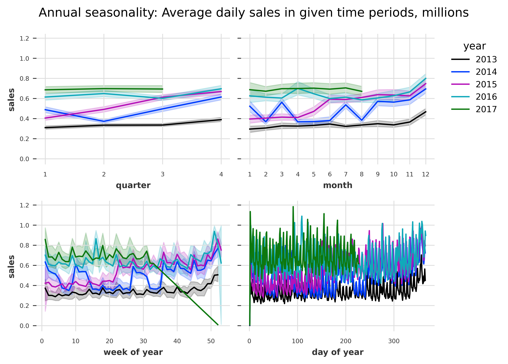
Quarterly: Sales do not seem to have a considerable quarterly seasonality pattern. However, the plot still shows us a few things:
Sales generally slightly increase over a year.
In Q2 2014, there was a considerable drop. Sales declined almost to the level of Q2 2013. This was likely a cyclical effect.
Monthly: Sales do seem to fluctuate slightly over months, but there’s no clear seasonal pattern that’s apparent across all years. However, sales seem to sharply increase in November and December every year, likely due to Christmas.
The cyclicality in 2014 is seen in more detail: Sales dropped almost to their 2013 levels in certain months, and recovered sharply in others.
We also see a considerable drop in the first half of 2015, where sales dropped roughly to 2014 levels, followed by a recovery.
There is a very sharp increase in April 2016, where sales were even higher than 2017 levels. This is due to a large earthquake that happened in April 16, 2016, and the related relief efforts.
Weekly: The seasonal patterns are more visible in the weekly plot, as we see the “waves” of fluctuation line up across years. It’s very likely the data has strong weekly seasonality, which is what we’d expect from supermarket sales.
The data for 2017 ends after August 15, so the sharp decline afterwards is misleading.
The sharp decline at the end of 2016 is also misleading, as 2016 was a 366-day year.
Daily: This plot is a bit noisy, but the very similar fluctuations across all years indicate the data is strongly seasonal. It also highlights some cyclical effects such as the April 2016 earthquake and the 2014 drops.
Another way to look at annual seasonality is to average sales in a certain calendar period across all years, without grouping by year.
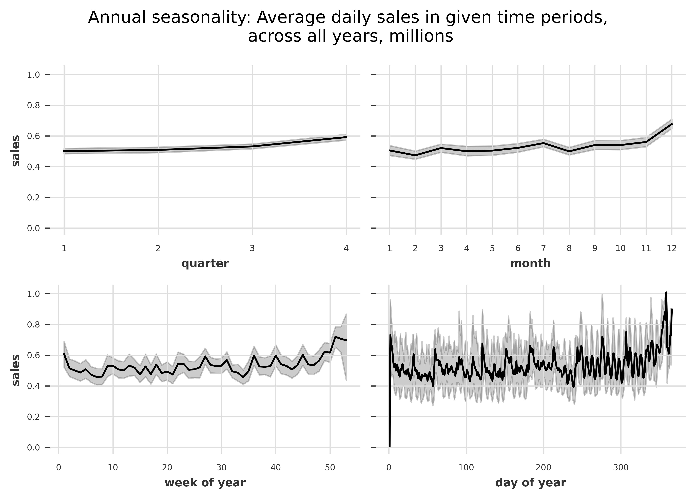
This shows us the “overall” seasonality pattern across one year: We likely have strong weekly seasonality that persists over years, and some monthly seasonality especially towards December.
Monthly & weekly seasonality
Now let’s look at seasonality across days of a month and days of a week. These will likely be the most important seasonality patterns in supermarket sales. There are three ways to look at these plots: First we will group them by year.
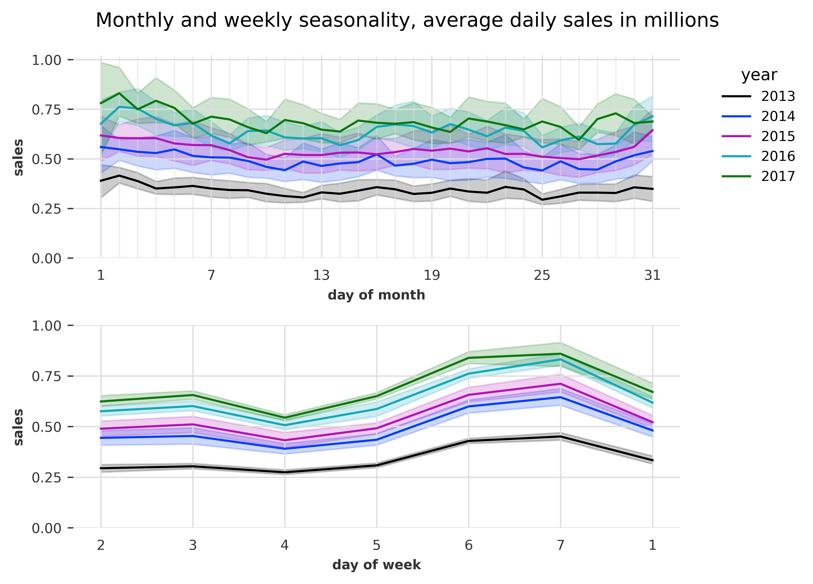
The weekly seasonality pattern across days of a week is clear. Sales are lowest in Tuesdays, increase and peak at Sundays, then drop on Mondays. The pattern holds in all years.
The monthly seasonality across days of a month aren’t as strong, but look considerable. Sales are generally highest at the start of a month, likely because most salaries are paid at the end of a month, though the competition information also says salaries are paid biweekly, in the middle and at the end of each month.
We can look at the same plots grouped by month.
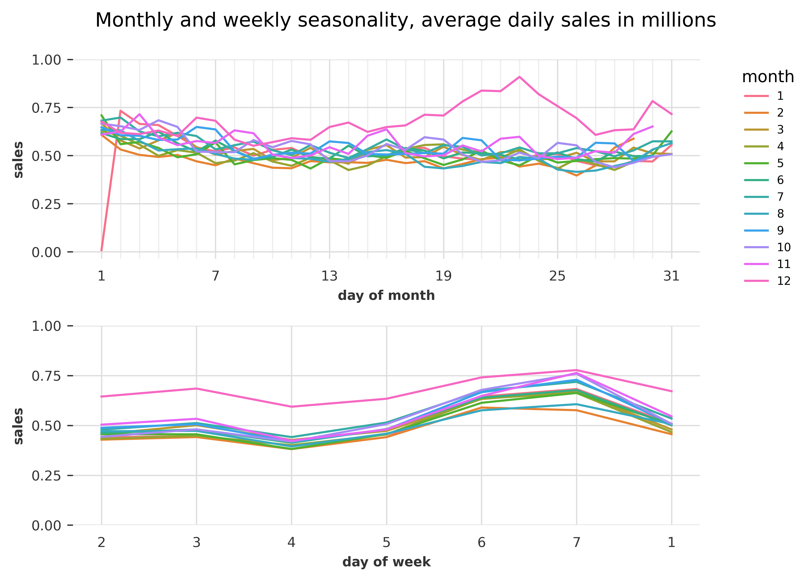
This plot shows us the monthly and weekly seasonality pattern generally holds across all months, but December is a notable exception:
Sales in December are considerably higher roughly after the 13th, due to Christmas. The Christmas peak seems to happen in the 23th, followed by a decline, and another sharp increase in the 30th.
The sales by day of week are also higher in December for every day, but the pattern of the weekly seasonality is the same.
We can also see that sales decline very sharply in January 1st, almost to zero, and make a considerably sharp recovery in the 2nd.
And finally, without any grouping: The averages across all years.
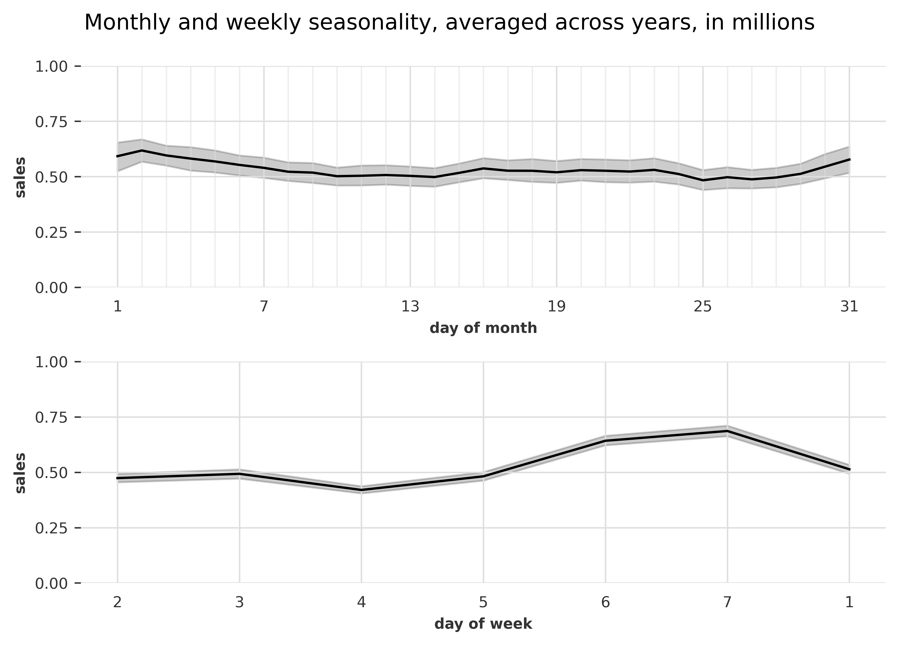
This plot allows us to see the overall monthly seasonality pattern more clearly: Sales are higher at the start of a month, slightly decline until the mid-month payday, slightly increase afterwards, and start peaking again after the end-of-month payday.
Autocorrelation & partial autocorrelation
Autocorrelation is the correlation of a variable at time T, with its own lagged values at time T-1, T-2 and so on. Partial autocorrelation can be thought of as the marginal contribution of each lagged value to autocorrelation, since the lags are likely to hold common information. The patterns in the autocorrelation and partial autocorrelation plots can give us insight into the seasonal patterns.
# FIG3: ACF and PACF plotsfrom statsmodels.graphics.tsaplots import plot_acf, plot_pacffig3, axes3 = plt.subplots(2)_ = fig3.suptitle('Autocorrelation and partial autocorrelation, daily sales, up to 54 days')_ = plot_acf(sales, lags=range(0,55), ax=axes3[0])_ = plot_pacf(sales, lags=range(0,55), ax=axes3[1], method="ywm")# Show fig3plt.show()plt.close("all")
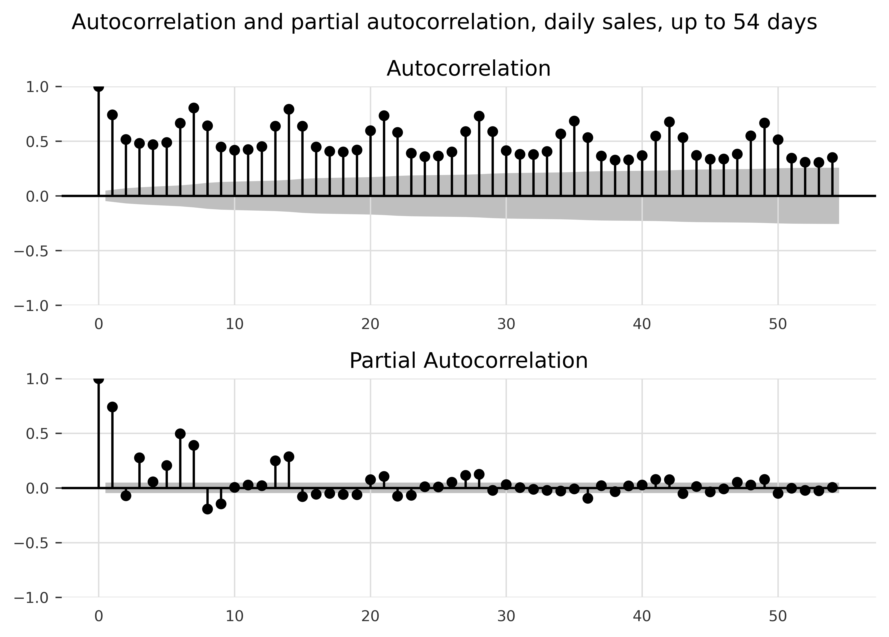
The sinusoidal pattern in the ACF plot is typical for strong weekly seasonality:
Sales at T=0 are highly correlated with the sales of the previous day at T=1.
The correlation declines until T=6, which is the previous value of the next weekday from T=0, and peaks at T=7, which is the previous value of the same weekday.
The pattern repeats weekly after T=7, with declining strength.
The PACF plot shows the marginal contribution of each lag to the relationship with the present day value. The partial autocorrelation is highest for lag 1, and significant correlations die out roughly after 14 days. In step 2 of this analysis, we will revisit this plot to derive features from sales lags, after performing time decomposition with model 1.
April 2016 Earthquake
One more time effect we will look at is the April 2016 earthquake, a one-off occurrence we need to adjust for in our model. The plots below show the seasonality of sales in April and May, in every year. The black dashed vertical line marks April 16.
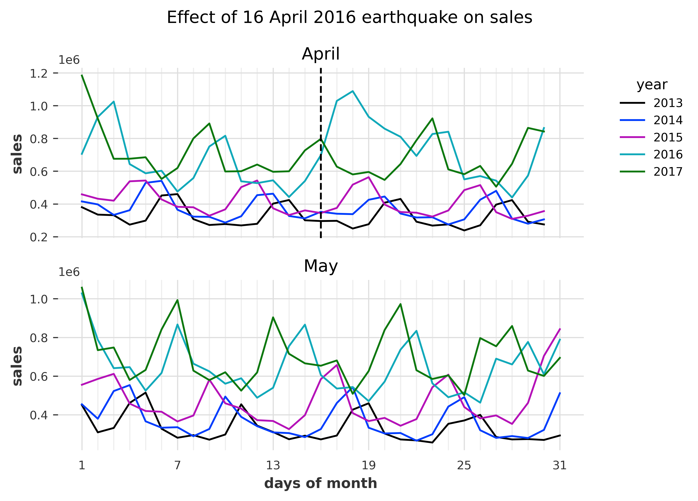
With the earthquake, the sales sharply increased from the expected seasonal pattern and trend, peaked in April 18, then declined and returned to the seasonal expectations around April 22. It doesn’t seem like sales were higher than normal for the rest of April 2016, or in May 2016. We’ll engineer our earthquake feature accordingly.
Feature engineering 1 - Time & calendar features
Our main candidate for the time decomposition model is a simple linear regression, so we will focus our feature engineering towards that.
Calendar effects & weekly seasonality features
We’ll flag the dates that influence sales considerably with dummy or ordinal features. These columns will take non-zero values if a certain calendar effect is present in a date, and zeroes otherwise.
Sales decline very sharply every year in January 1st, almost to zero. The sales in January 2nd then recover sharply, which is a huge relative increase for one day, so we will flag both dates with dummy features.
# New year's day featuresdf_train["ny1"] = ((df_train.index.day ==1) & (df_train.index.month ==1)).astype(int)# Set holiday dummies to 0 if NY dummies are 1df_train.loc[df_train["ny1"] ==1, ["local_holiday", "regional_holiday", "national_holiday"]] =0df_train["ny2"] = ((df_train.index.day ==2) & (df_train.index.month ==1)).astype(int)df_train.loc[df_train["ny2"] ==1, ["local_holiday", "regional_holiday", "national_holiday"]] =0
We have considerably higher sales in December due to Christmas and the New Years’ Eve.
For NY’s eve effects, we can simply flag December 30 and 31st with dummy features.
For Christmas effects, we will create two integer columns that reflect the ‘strength’ of the Christmas effect on sales, based on day of month. The columns will reach its maximum value in December 23rd, and decline as the date moves away from that. For dates outside December 13-27, these features will take a value of zero. This may not be the most sophisticated way to reflect the Christmas effects on our model, but it should be simple and effective.
To account for the effect of the April 2016 earthquake, we create a feature similar to the ones for Christmas. The feature peaks at April 18th and takes a value of zero for dates outside April 17-22, 2016.
We previously created dummy features to indicate local-regional-national holidays, and special events. There are only a few different events in the dataset, and they differ in nature, so we will break up the events column and create separate dummy features for each event. We already created a feature for the earthquake, so we’ll skip that one.
Holidays and events may lead to an increase in sales in advance, so we will create one lag column for each holiday column, and the Mother’s Day event. These features could be tailored more carefully according to each holiday and event, but we’ll keep it simple.
To capture the weekly seasonality in a simple manner, we’ll create 6 dummy features for days of the week. We won’t create one for Monday, since a 0 value for the other 6 columns means Monday.
Now we will aggregate the time features by mean. For local and regional holidays, this will give us fractional values between 0 and 1, which is likely a decent way to reflect local and regional holidays’ effects on national sales.
# Aggregate time features by meantime_covars = df_train.drop(columns=['id', 'store_nbr', 'family', 'sales', 'onpromotion', 'transactions', 'oil', 'city', 'state', 'store_type', 'store_cluster'], axis=1).groupby("date").mean(numeric_only=True)
Trend & monthly seasonality features
In the exploratory analysis, we saw the overall trend can be modeled linearly, but the rate of increase (the slope of the trend line) declines from the start of 2015. To capture this, we will model a piecewise linear trend with one knot at 01-01-2015.
In effect, the slope of the linear trend will change and decline once, at the knot date. The result will be two linear trend lines added together.
It’s possible to add more “turns” to a linear trend with more knots, but one is enough in our case. We want the trend to be simple, and robust against seasonal or cyclical fluctuations.
# Add piecewise linear trend dummiestime_covars["trend"] =range(1, 1685) # Linear dummy 1# Knot to be put at period 729time_covars.loc[time_covars.index=="2015-01-01"]["trend"] # Add second linear trend dummytime_covars["trend_knot"] =0time_covars.iloc[728:,-1] =range(0, 956)# Check start and end of knottime_covars.loc[time_covars["trend"]>=729][["trend", "trend_knot"]]
trend
trend_knot
date
2015-01-01
729
0
2015-01-02
730
1
2015-01-03
731
2
2015-01-04
732
3
2015-01-05
733
4
...
...
...
2017-08-11
1680
951
2017-08-12
1681
952
2017-08-13
1682
953
2017-08-14
1683
954
2017-08-15
1684
955
956 rows × 2 columns
For the monthly seasonality, we will create Fourier features.
Named after the French mathematician, Fourier series can be used to model any periodic, repeating fluctuation / waveform as sums of numerous sine-cosine pairs.
We’ll create 5 Fourier pairs (10 columns in total) for 28-period seasonality. This will capture the slight increases and decreases in sales throughout a month, mostly due to proximity to paydays.
December was an exception to the monthly seasonality pattern, but our Christmas and NY features will adjust for that.
from statsmodels.tsa.deterministic import DeterministicProcess# Add Fourier features for monthly seasonalitydp = DeterministicProcess( index = time_covars.index, constant =False, order =0, # No trend feature seasonal =False, # No seasonal dummy features period =28, # 28-period seasonality (28 days, 1 month) fourier =5, # 5 Fourier pairs drop =True# Drop perfectly collinear terms)time_covars = time_covars.merge(dp.in_sample(), how="left", on="date")# View Fourier featurestime_covars.iloc[0:5, -10:]
sin(1,28)
cos(1,28)
sin(2,28)
cos(2,28)
sin(3,28)
cos(3,28)
sin(4,28)
cos(4,28)
sin(5,28)
cos(5,28)
date
2013-01-01
0.0000
1.0000
0.0000
1.0000
0.0000
1.0000
0.0000
1.0000
0.0000
1.0000
2013-01-02
0.2225
0.9749
0.4339
0.9010
0.6235
0.7818
0.7818
0.6235
0.9010
0.4339
2013-01-03
0.4339
0.9010
0.7818
0.6235
0.9749
0.2225
0.9749
-0.2225
0.7818
-0.6235
2013-01-04
0.6235
0.7818
0.9749
0.2225
0.9010
-0.4339
0.4339
-0.9010
-0.2225
-0.9749
2013-01-05
0.7818
0.6235
0.9749
-0.2225
0.4339
-0.9010
-0.4339
-0.9010
-0.9749
-0.2225
Model 1 - Time effects decomposition
We will now build our time decomposition linear regression model in Darts, and compare it with some baseline models, as well as some models that are quicker to implement.
Preprocessing
# Create Darts time series with time featsts_timecovars = TimeSeries.from_dataframe( time_covars, freq="D", fill_missing_dates=False)
Our target and covariate Series had 1684 rows each, but the Darts TimeSeries we create from them have 1688 dates. This is likely because we have gaps in our original series. We can check this easily in Darts.
# Scan for gapsts_timecovars.gaps()
gap_start
gap_end
gap_size
0
2013-12-25
2013-12-25
1
1
2014-12-25
2014-12-25
1
2
2015-12-25
2015-12-25
1
3
2016-12-25
2016-12-25
1
It seems our data is missing values for December 25th in every year (the data for 2017 ends in August). Darts automatically filled in the missing dates to 1688, but we need to fill the missing values in our target and covariate series.
# Fill gaps by interpolating missing valuesfrom darts.dataprocessing.transformers import MissingValuesFillerna_filler = MissingValuesFiller()ts_sales = na_filler.transform(ts_sales)ts_timecovars = na_filler.transform(ts_timecovars)# Scan for gaps againts_timecovars.gaps()
gap_start
gap_end
Our exploratory analysis showed that the seasonal fluctuations in sales become larger over time. We should use a multiplicative decomposition instead of additive.
In additive decomposition, we decompose a time series as Trend + Seasonality + Remainder.
In multiplicative decomposition, we decompose a time series as Trend * Seasonality * Remainder.
One way of performing multiplicative decomposition is taking the logarithm of the time series and performing additive decomposition, as addition / subtraction in log(x) is equivalent to multiplication / division in x.
# Define functions to perform log transformation and reverse it. +1 to avoid zeroesdef trafo_log(x):return x.map(lambda x: np.log(x+1))def trafo_exp(x):return x.map(lambda x: np.exp(x)-1)
We’ll train our time decomposition models on the daily sales data from 2013-2016, and validate their prediction performance on 2017.
# Train-validation split: Pre 2017 vs 2017y_train1, y_val1 = trafo_log(ts_sales[:-227]), trafo_log(ts_sales[-227:])x_train1, x_val1 = ts_timecovars[:-227], ts_timecovars[-227:]
Model specification
We’ll compare the performance of our linear regression model against a few other models.
Naive drift and naive seasonal are two baseline models, meant to represent the performance of a very simple prediction.
Naive drift simply fits a straight line from the start to the end of the training data, and extrapolates it.
Naive seasonal simply repeats the last K values in the training set.
We’ll also test two simple seasonal models which require little input. These models can capture a trend and one seasonality period, but cannot use other covariates in their predictions, such as our calendar features.
Fast Fourier Transform is an algorithm that converts a signal from the time domain to the frequency domain, used in many fields such as engineering and music. In our case, we’ll try to model the weekly seasonality waves with FFT, as it is the strongest seasonality in the data, along with a linear trend.
Exponential smoothing uses exponentially weighted moving averages of a certain number of lags to make predictions. Again, we’ll model the weekly seasonality with a linear trend.
And finally, we’ll use our tailored linear regression model with piecewise linear trend dummies, Fourier features for monthly seasonality and dummy features for weekly seasonality & calendar effects. We’ll see how much better it performs compared to models that can be specified and applied quickly.
# Import modelsfrom darts.models.forecasting.baselines import NaiveDrift, NaiveSeasonalfrom darts.models.forecasting.fft import FFTfrom darts.models.forecasting.sf_ets import StatsForecastETS as ETSfrom darts.models.forecasting.linear_regression_model import LinearRegressionModel# Specify baseline modelsmodel_drift = NaiveDrift()model_seasonal = NaiveSeasonal(K=7) # Repeat the last week of the training data# Specify FFT modelmodel_fft = FFT( required_matches = {"day_of_week"}, # Try to match the weekdays of the training sequence with the predictions nr_freqs_to_keep =10, # Keep 10 frequencies trend ="poly", trend_poly_degree =1# Linear trend)# Specify ETS modelmodel_ets = ETS( season_length =7, # Weekly seasonality model ="AAA"# Additive trend, seasonality and remainder component)# Specify linear regression modelmodel_linear1 = LinearRegressionModel( lags_future_covariates = [0] # Don't create any more lagged covariate values )
Model validation: Predicting 2017 sales
We’ll train our models on 2013-2016 sales data, predict the sales for 2017, and score the predictions with a custom function.
# Fit models on train data (pre-2017), predict validation data (2017)model_drift.fit(y_train1)pred_drift = model_drift.predict(n =227)model_seasonal.fit(y_train1)pred_seasonal = model_seasonal.predict(n =227)model_fft.fit(y_train1)pred_fft = model_fft.predict(n =227)model_ets.fit(y_train1)pred_ets = model_ets.predict(n =227)model_linear1.fit(y_train1, future_covariates = x_train1)pred_linear1 = model_linear1.predict(n =227, future_covariates = x_val1)
We see our linear regression model performs much better than the baseline and simple methods tested. It’s also notable that the naive seasonal model beats the ETS model in all metrics, while beating FFT in RMSE.
RMSLE stands for root mean squared log error. Log errors penalize underpredictions much more strongly than overpredictions, which could be particularly good for assessing sales predictions, as unfulfilled demand is likely more costly than overstocking. The competition is scored on RMSLE.
Since the naive seasonal model has lower RMSE but higher RMSLE compared to FFT, it’s likely it tends to underpredict compared to FFT.
Let’s plot the predictions of our models and compare them visually with the actual values.
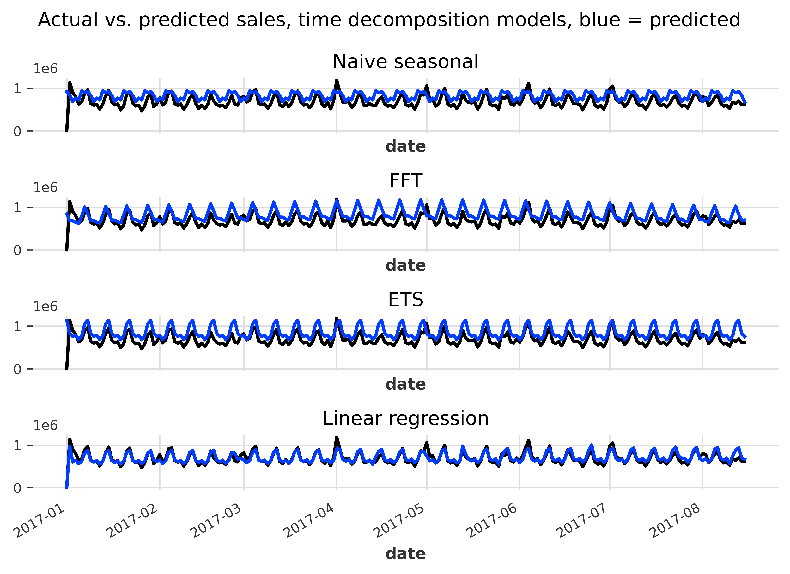
The FFT and ETS models actually did a good job of capturing the weekly seasonality pattern in the data, as the shape and timing of the waves in the predictions are similar to the actual values.
However, the FFT and ETS models almost always overestimated the trend of 2017 sales. This is likely because they modeled the trend with a simple linear term, so it can’t adjust for the slope decline that happens in 2015.
The naive seasonal model performed close to FFT and ETS by coincidence, because the 7 days of sales it repeated were close to the trend of 2017.
The naive, FFT and ETS models also couldn’t account for the sharp drop in sales in January 1st, as they don’t take in covariates.
In contrast, the linear model’s trend and seasonality are both on point, and the January 1st drop, along with the January 2nd recovery, are adjusted for nicely. The model is not able to match some peaks and troughs fully, which are possibly cyclical in nature. That’s where Model 2 will come in.
Rolling crossvalidation
We can further evaluate the performance of our model with rolling crossvalidation: This is the practice of training a model with past data up to a certain time point, predicting the next time point(s), adding them to the training data and repeating the process with increasingly wider training windows until the end of the data.
We’ll start by training the model on 2013 only, as it makes sense to feed a full year of the seasonality patterns to the model.
Then we’ll predict the next day, add it to the training data, and repeat the process until the end of the data. This could take a long time for more complex models, but it should be fine for linear regression.
We’ll also retrieve the residuals for each prediction, which will represent the decomposed sales we’ll use as our target variable in the second model.
Again, the model captures the trend & seasonality patterns nicely, but the errors due to cyclical effects are even more apparent in 2014 and 2015. If we had modeled the trend non-linearly, such as with an STL decomposition, the trend term would likely respond strongly to these fluctuations, and potentially be overfit for predictions after the training time period.
Residuals diagnosis & stationarity
We’ll now analyze the residuals from our historical forecasts.
# Diagnose linear model 1's innovation residualsfrom darts.utils.statistics import plot_residuals_analysis, plot_pacf_ = plot_residuals_analysis(res_linear1)plt.show()plt.close("all")# PACF plot of decomped sales residuals_ = plot_pacf(res_linear1, max_lag=56)_ = plt.title("Partial autocorrelation plot, residuals of linear model 1")_ = plt.xlabel("Lags")_ = plt.ylabel("PACF")_ = plt.xticks(np.arange(0, 56, 10))_ = plt.xticks(np.arange(0, 56, 1), minor=True)_ = plt.grid(which='minor', alpha=0.5)_ = plt.grid(which='major', alpha=1)plt.show()plt.close("all")
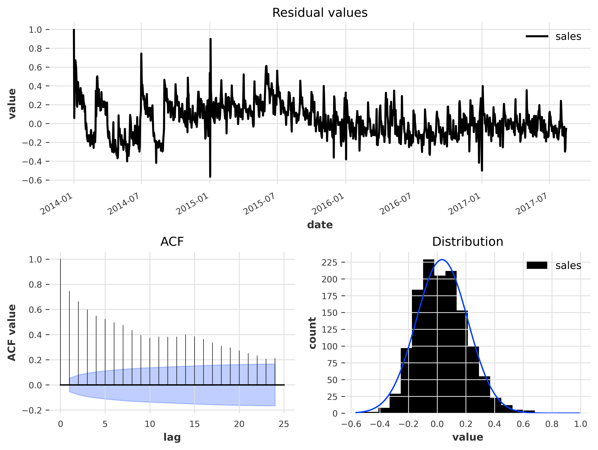
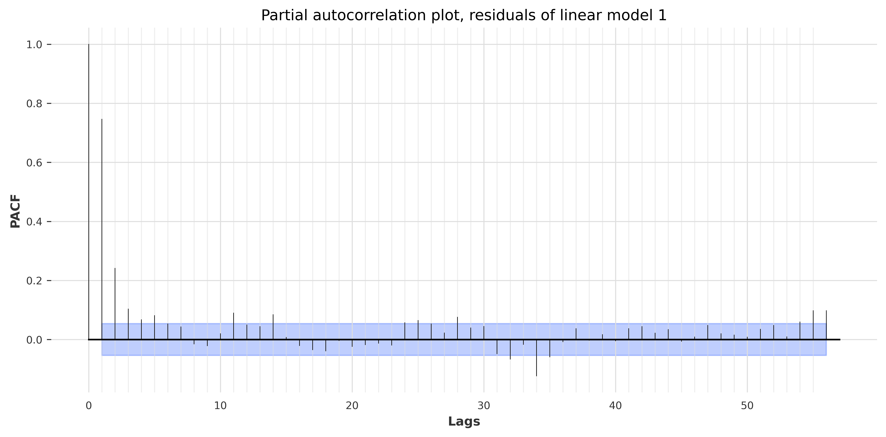
Ideally, we’d want very small residuals that are normally distributed around zero, representing the truly unpredictable remainder of our models. This is not the case overall, so there’s room for improvement in our predictions.
We see residuals for 2014-2015 especially deviate more from zero. This is likely due to the cyclical behavior we observed in this period. Our second model will aim to account for this.
The overall distribution of the residuals is not too far from a normal distribution around zero, but the right tail is bigger, indicating some values are strongly underpredicted. These are mostly from 2014-2015.
The PACF plot shows strong autocorrelation with lag 1, which means we’ll likely include a sales lag in the second model. There are also small, barely significant partial autocorrelations after lag 2.
A stationary time series is one that doesn’t change depending on time. Ideally, we’d want our residuals to be stationary to consider our modeling complete. We can test their stationarity with two statistical tests. First is the Kwiatkowski-Phillips-Schmidt-Shin test.
# Import KPSS and ADF testsfrom darts.utils.statistics import stationarity_test_kpss, stationarity_test_adfprint("KPSS test p-value: "+ stationarity_test_kpss(res_linear1)[1].astype(str)) # Null rejected = data is non-stationary
KPSS test p-value: 0.01
The null hypothesis for the KPSS test is stationarity around a constant value. With a p-value smaller than 0.01, the null is rejected, so the test suggests our residuals are non-stationary.
Second is the Augmented Dickey-Fuller test.
print("ADF test p-value: "+ stationarity_test_adf(res_linear1)[1].astype(str)) # Null rejected = data is stationary around a constant
ADF test p-value: 7.49538399004551e-05
The null hypothesis for the ADF test is the presence of a unit root, while the alternative hypothesis is stationarity around a constant. With a very small p-value, the null is rejected and the alternative is accepted, so the test suggests our residuals are stationary around a constant, conflicting with the KPSS test.
Time decomposition
We will train our second model on the time-decomposed sales, which are the residuals of the first model.
Since 2013-2016 will serve as our training data, we need to fit the first model on 2013-2016, and retrieve the fitted residuals to serve as training data for the second model, but Darts doesn’t allow predictions on the training data (which makes sense, as this is normally a mistake if the goal is to evaluate model performance).
Instead, it’s possible to use the model_linear1.residuals() method, which returns the residuals from rolling crossvalidation as performed previously, but this will lead to higher residuals for the earlier days in our data, as they will be retrieved from models fitted on small portions of our available data, without seeing all the examples of the time patterns we want to remove.
Since we are ultimately interested in improving our model’s performance in 2017 predictions, and we already validated model 1 on 2017, we’ll perform the final time decomposition in sklearn, which allows predictions on the fitted data.
# Perform time decomposition in Sklearn# Retrieve Darts target and features with filled gapssales = ts_sales.pd_series()time_covars = ts_timecovars.pd_dataframe()# Train-test splity_train, y_val = trafo_log(sales[:-227]), trafo_log(sales[-227:])x_train, x_val = time_covars.iloc[:-227,], time_covars.iloc[-227:,]# Fit & predict on 13-16, retrieve residualsfrom sklearn.linear_model import LinearRegressionmodel_decomp = LinearRegression()model_decomp.fit(x_train, y_train)pred1 = model_decomp.predict(x_train)res1 = y_train - pred1# Predict on 17, retrieve residualspred2 = model_decomp.predict(x_val)res2 = y_val - pred2# Concatenate residuals to get decomposed salessales_decomp = pd.concat([res1, res2])# Concatenate predictions to get model 1 predictionspreds_model1 = pd.Series(np.concatenate((pred1, pred2)), index = sales_decomp.index)
Now, preds_model1 are the predictions of model 1 on the entire dataset, after being fitted on 2013-2016. sales_decomp are the residuals of these predictions. We’ll fit model 2 on sales_decomp, and add preds_model1 to its predictions to achieve our final hybrid predictions.
Exploratory analysis 2 - Lags & covariates
Now we will explore the sales lags & covariate time series as possible predictors for our second model.
# Aggregate daily covariates from df_train: oil, onpromotion, transactionscovars = df_train.groupby("date").agg( { "oil": "mean","onpromotion": "sum","transactions": "mean"} )# Merge decomposed sales and covariatessales_covariates = covars.merge(sales_decomp.rename("sales"), on ="date", how ="left")
Covariates stationarity & differencing
Oil, onpromotion and transactions are time series that we will consider as predictors of sales.
However, we performed time decomposition on sales, removing effects of time.
Our covariate series may display their own time effects and seasonalities. We can use stationarity tests to quickly check for this.
If a covariate is non-stationary, a quick way to possibly make it stationary is differencing: Subtracting each value from the value of the previous period. This will give us the change in each period, instead of the absolute value.
# Test stationarity of covariatesfrom statsmodels.tsa.stattools import kpss, adfullerprint("KPSS test p-value: "+ kpss(sales_covariates["oil"])[1].astype(str)) # Null rejected = data is non-stationaryprint("ADF test p-value: "+ adfuller(sales_covariates["oil"])[1].astype(str)) # Null accepted = data is non-stationary
KPSS test p-value: 0.01
ADF test p-value: 0.8027065796825488
Both the KPSS and ADF test suggest the oil time series is non-stationary, so we’ll difference it. If one covariate is differenced, it makes sense to difference the others as well.
Now our covariate columns all represent the change in each covariate compared to the previous period.
Sales features
Let’s evaluate features derived from sales lags as possible predictors. We’ll start with autocorrelation plots.
from statsmodels.graphics.tsaplots import plot_pacf as pacf_tsafrom sktime.utils.plotting import plot_lagsfrom scipy.stats import pearsonr, spearmanr
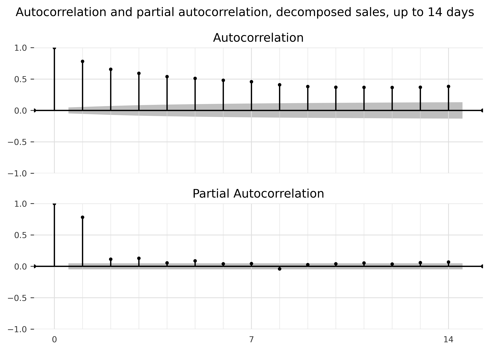
As we saw in model 1’s residuals analysis, sales lag 1 makes a strong contribution to the partial autocorrelation, while lags 2 to 7 make weak but significant contributions.
Linear correlation may not always do justice to the relationship between two variables, so let’s look at the scatterplots of sales with its first 9 lags.
# FIG9: Sales lag scatterplotsfig9, axes9 = plot_lags( sales_covariates["sales"], lags = [1,2,3,4,5,6,7,8,9], suptitle ="Sales lags")# Show fig9plt.show()plt.close("all")
It doesn’t look like any lag after 1 displays a considerably different relationship with sales.
We can also consider a rolling feature, such as a moving average.
Since we know lag 1 is the most important lag, an exponentially weighted moving average makes sense. This type of moving average puts more weight on recent lags, and less on older lags.
A weekly period makes sense, as that was a strong seasonal period in the data, and the significance of partial autocorrelations die out after lag 7.
# Calculate 7-day exponential moving average of sales lagssales_covariates["sales_ema7"] = sales_covariates["sales"].rolling( window =7, min_periods =1, center =False, win_type ="exponential").mean()
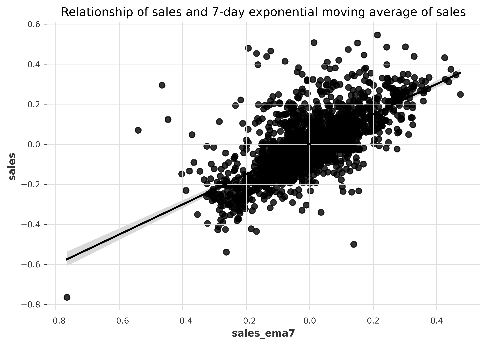
We can see sales EMA7 is a good linear predictor of sales, similar to lag 1. Let’s compare lag 1’s correlation with sales to EMA7’s correlation with sales.
# Correlation of sales and lag 1pearsonr(sales_covariates["sales"], sales_covariates["sales"].shift(1).fillna(method="bfill"))
Lag 1 comes out as the stronger linear predictor, but EMA7 is a good one too. We can include both as features, so lags 2-7 can contribute to the model in some way.
Oil features
The oil price change of one day is not likely to mean much by itself, and the effect of oil prices on the economy likely takes some time to manifest.
Therefore, we’ll just consider moving averages of the oil prices as features.
These won’t be exponentially weighted averages, as recent oil prices likely require time to make their effect on sales. It’s even possible oil prices with a certain degree of lag are the more important predictors compared to more recent oil prices.
# Calculate oil MAsoil_ma = sales_covariates.assign( oil_ma7 =lambda x: x["oil"].rolling(window =7, center =False).mean(), oil_ma14 =lambda x: x["oil"].rolling(window =14, center =False).mean(), oil_ma28 =lambda x: x["oil"].rolling(window =28, center =False).mean(), oil_ma84 =lambda x: x["oil"].rolling(window =84, center =False).mean(), oil_ma168 =lambda x: x["oil"].rolling(window =168, center =False).mean(), oil_ma336 =lambda x: x["oil"].rolling(window =336, center =False).mean(),)
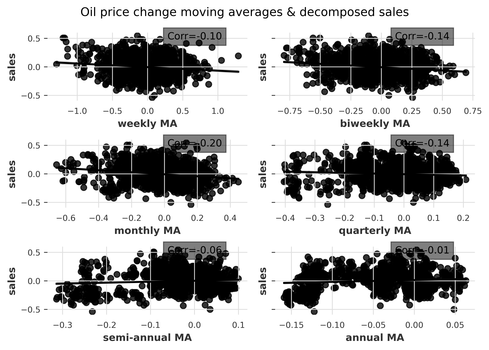
We don’t see particularly strong relationships between oil price change MAs and sales, though the monthly MA is the most notable one with a correlation of -0.2, so we will use that as a feature.
Since we need 28 past periods to calculate this MA for a 29th period, we’ll have missing values for the first 28 periods in our data. After some iteration, these were interpolated decently with a second-order spline interpolation.
# Keep monthly oil MAs as a featuresales_covariates["oil_ma28"] = sales_covariates["oil"].rolling(window =28, center =False).mean()# Spline interpolation for missing valuessales_covariates["oil_ma28"] = sales_covariates["oil_ma28"].interpolate( method ="spline", order =2, limit_direction ="both")# Check quality of interpolation_ = sales_covariates["oil"].plot()_ = sales_covariates["oil_ma28"].plot()_ = plt.title("Oil price change and its 28-day moving average, first 28 MAs interpolated")plt.show()plt.close("all")
Onpromotion features
Onpromotion is the number of items that are on sale, aggregated across all stores and categories. We’ll start exploring the relationship between onpromotion and sales using a cross-correlation plot: The correlations of sales at time 0, with lags and leads of onpromotion. Since the supermarket chain controls the number of items that will go on sale, it may be feasible to use leading values of onpromotion as predictors.
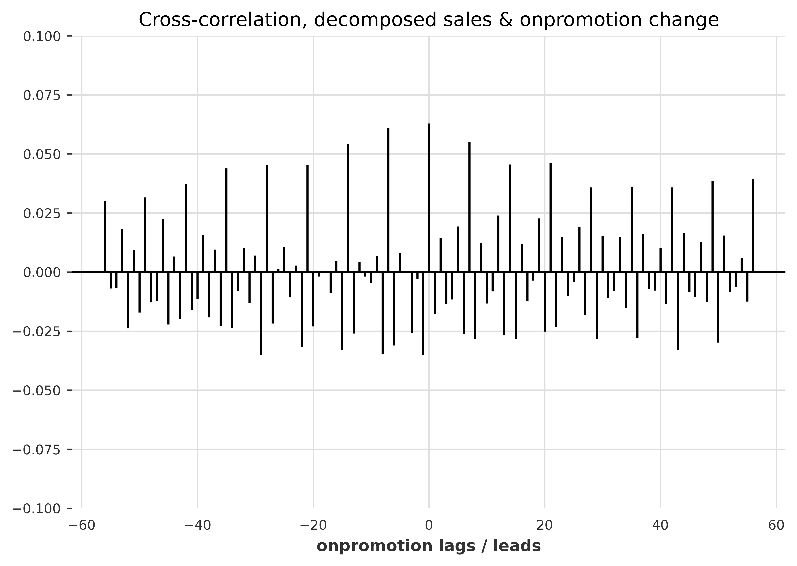
Single lags / leads of onpromotion don’t display any significant correlations with sales, though there is a repeating pattern of likely six days. Let’s look at the scatterplots of sales at time 0, with four of the more relatively significant lags (lag 0 being the present value of onpromotion).
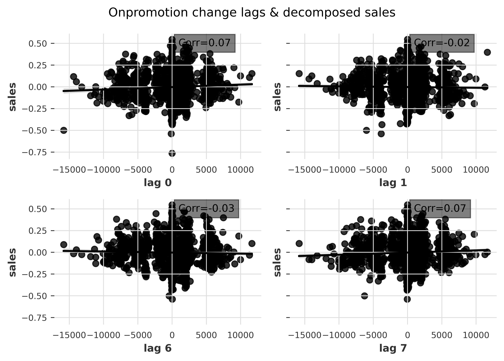
Again, no significant relationship between single onpromotion lags and sales. Let’s consider moving averages.
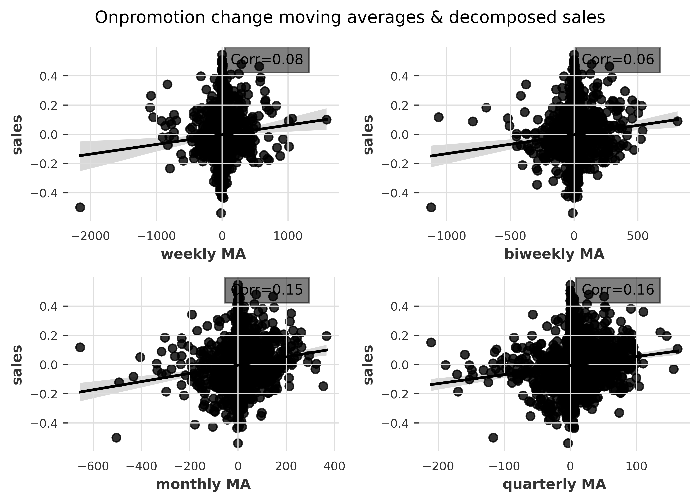
The monthly and quarterly MA of onpromotion seems to be slightly positively correlated with sales. We’ll use the monthly MA as a feature, as we would have to fill in too many missing values for the quarterly MA.
# Keep monthly onpromotion MAs as a featuresales_covariates["onp_ma28"] = sales_covariates["onpromotion"].rolling(window =28, center =False).mean()# Spline interpolation for missing valuessales_covariates["onp_ma28"] = sales_covariates["onp_ma28"].interpolate( method ="spline", order =2, limit_direction ="both")# Check quality of interpolation_ = sales_covariates["onpromotion"].plot()_ = sales_covariates["onp_ma28"].plot()_ = plt.title("Onpromotion change and its 28-day moving average, first 28 MAs interpolated")plt.show()plt.close("all")
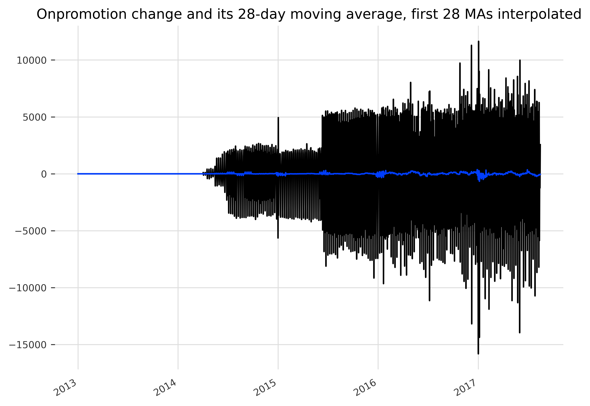
The daily changes in onpromotion are practically zero roughly until Q1 2014. Afterwards, changes in onpromotion became increasingly larger, which probably hints at a macroeconomic shift in 2014. The cyclicality in our data becomes especially prominent in 2014 as well.
Transactions features
Finally, we have the number of transactions, aggregated across all stores.
This is most likely to be a current predictor of sales, i.e. days with higher transactions are likely to be days with higher sales.
Still, recent levels of transactions may help us predict future sales.
The transactions data is only available for the training dataset (up to mid-August 2017), and not for the testing dataset (15 days after the training dataset).
We can freely consider transactions as a feature for Part 1 of this analysis, but in Part 2, we’ll aim to predict the testing data and make a competition submission, so we’ll only be able to consider lag 15 or older values of transactions as features.
Lag 15 is marked with a red dashed vertical line in the cross-correlation plot below.
Again, single transactions lags don’t display strong correlations with sales. Unlike onpromotion, there doesn’t seem to be a repeating pattern either. Lags 0-3 are relatively stronger, so let’s see their scatterplots.
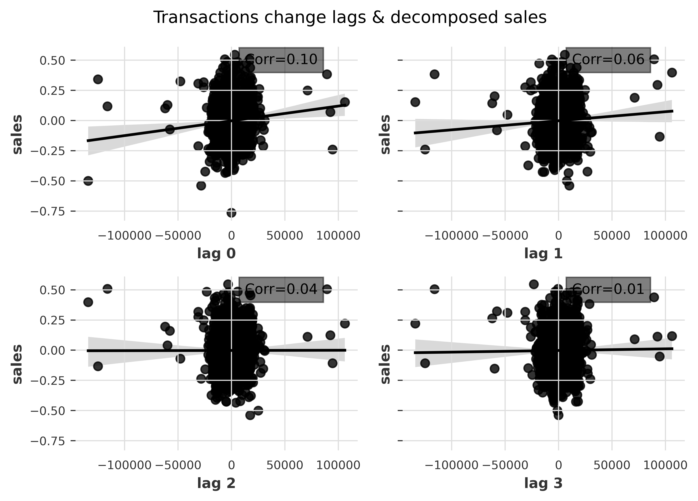
As we expected, the present value of transactions have a weak, but relatively stronger positive relationship with the value of sales compared to the lags.
However, the correlation and the line is impacted by a few outliers with particularly low or high values for transactions, while the relationship seems even weaker for the vast majority of observations.
This likely tells us that a huge drop / increase in transactions is likely to affect sales a bit, but usual fluctuations in transactions doesn’t tell much about the sales.
Let’s consider moving averages of changes in transactions, as a possible indicator of recent sales activity.
# FIG13: Transactions MAsfig13, axes13 = plt.subplots(2,2)_ = fig13.suptitle("Transactions change moving averages & decomposed sales")# Calculate MAs without min_periods = 1trns_ma = sales_covariates.assign( trns_ma7 =lambda x: x["transactions"].rolling(window =7, center =False).mean(), trns_ma14 =lambda x: x["transactions"].rolling(window =14, center =False).mean(), trns_ma28 =lambda x: x["transactions"].rolling(window =28, center =False).mean(), trns_ma84 =lambda x: x["transactions"].rolling(window =84, center =False).mean())# MA7_ = sns.regplot( ax = axes13[0,0], data = trns_ma, x ="trns_ma7", y ="sales")_ = axes13[0,0].set_xlabel("weekly MA")_ = axes13[0,0].annotate('Corr={:.2f}'.format( spearmanr(trns_ma["trns_ma7"], trns_ma["sales"], nan_policy='omit')[0] ), xy=(.6, .9), xycoords="axes fraction", bbox=dict(alpha=0.5) )# MA14_ = sns.regplot( ax = axes13[0,1], data = trns_ma, x ="trns_ma14", y ="sales")_ = axes13[0,1].set_xlabel("biweekly MA")_ = axes13[0,1].annotate('Corr={:.2f}'.format( spearmanr(trns_ma["trns_ma14"], trns_ma["sales"], nan_policy='omit')[0] ), xy=(.6, .9), xycoords="axes fraction", bbox=dict(alpha=0.5) )# MA28_ = sns.regplot( ax = axes13[1,0], data = trns_ma, x ="trns_ma28", y ="sales")_ = axes13[1,0].set_xlabel("monthly MA")_ = axes13[1,0].annotate('Corr={:.2f}'.format( spearmanr(trns_ma["trns_ma28"], trns_ma["sales"], nan_policy='omit')[0] ), xy=(.6, .9), xycoords="axes fraction", bbox=dict(alpha=0.5) )# MA84_ = sns.regplot( ax = axes13[1,1], data = trns_ma, x ="trns_ma84", y ="sales")_ = axes13[1,1].set_xlabel("quarterly MA")_ = axes13[1,1].annotate('Corr={:.2f}'.format( spearmanr(trns_ma["trns_ma84"], trns_ma["sales"], nan_policy='omit')[0] ), xy=(.6, .9), xycoords="axes fraction", bbox=dict(alpha=0.5) )# Show fig13plt.show()plt.close("all")
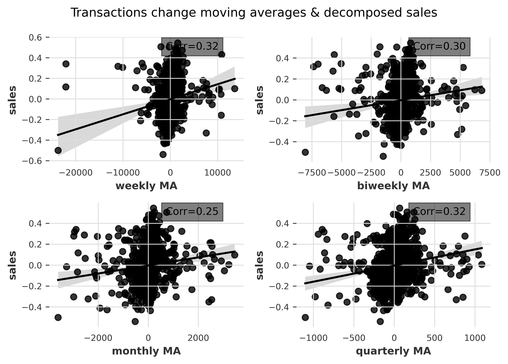
The MAs are much more significant than single lags, though the correlations are still likely impacted by extreme values. Still, these features could help our model adjust for extreme increases / decreases in transactions. We’ll keep the weekly MA as it has the strongest linear relationship, and will create the fewest number of missing values to fill in.
# Keep weekly transactions MAsales_covariates["trns_ma7"] = sales_covariates["transactions"].rolling(window =7, center =False).mean()# Backwards linear interpolationsales_covariates["trns_ma7"] = sales_covariates["trns_ma7"].interpolate("linear", limit_direction ="backward")# Check quality of interpolation_ = sales_covariates["transactions"].plot()_ = sales_covariates["trns_ma7"].plot()_ = plt.title("Transactions change and its 7-day moving average, first 7 MAs interpolated")plt.show()plt.close("all")
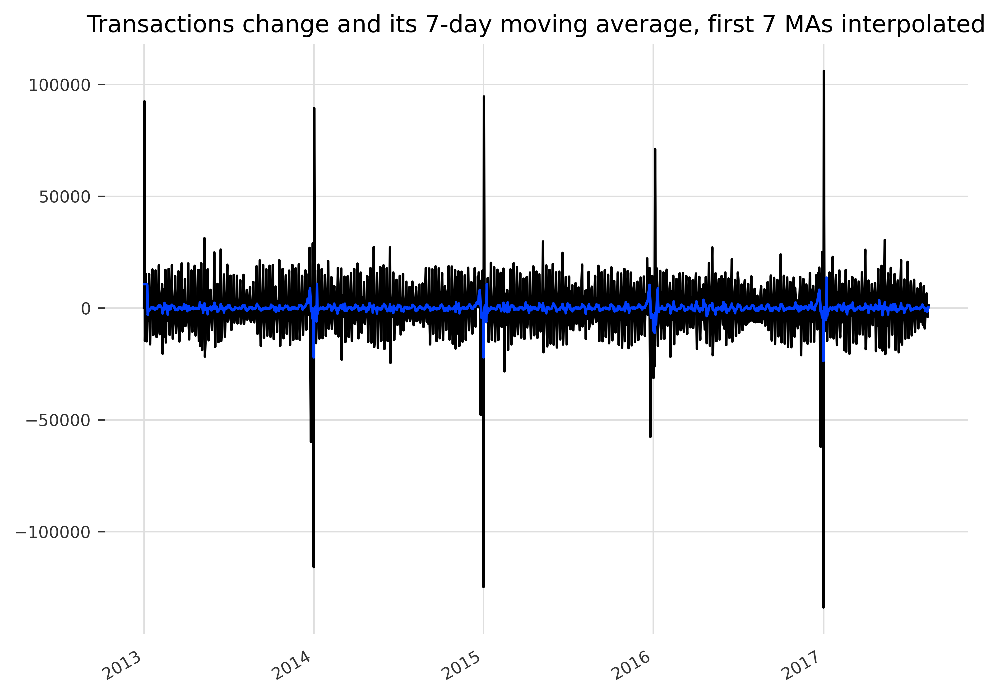
We can see the sharp drop in transactions on January 1st, and the recovery on January 2nd, reflected both in the time series plot of transactions changes, and its weekly moving average.
Model 2 - Lags & covariates
Preprocessing
We repeat some preprocessing steps for Model 2.
# Drop original covariates & targetlags_covars = sales_covariates.drop( ['oil', 'onpromotion', 'transactions', 'sales'], axis =1)# Make Darts TS with selected covariatests_lagscovars = TimeSeries.from_dataframe( lags_covars, freq="D")# Make Darts TS with decomposed salests_decomp = TimeSeries.from_series(sales_decomp.rename("sales"), freq="D")# Make Darts TS with model 1 predictionsts_preds1 = TimeSeries.from_series(preds_model1.rename("sales"), freq="D")# Fill gaps in TSts_decomp = na_filler.transform(ts_decomp)ts_lagscovars = na_filler.transform(ts_lagscovars)# Train-test split (pre-post 2017)y_train2, y_val2 = ts_decomp[:-227], trafo_log(ts_sales[-227:])x_train2, x_val2 = ts_lagscovars[:-227], ts_lagscovars[-227:]
In model 1, our features were trend dummies, Fourier pairs and binary / ordinal features for calendar effects, none of which required scaling. In this model, we have covariates of different natures and value ranges. For example, the oil price changes are often fractional, while changes in transactions are often in the thousands. The former reflects a unit price, the latter reflects a count. Therefore, we’ll scale and center our features to avoid domination by features with large values.
We’ll use the same baseline models as we did in model 1. We’ll compare them with an ARIMA model, another linear regression, and a random forest model.
ARIMA models combine autoregressive models (AR) and moving average models (MA).
An AR model of order p uses the linear combination of past p values of a series as predictors, to forecast its future values.
A MA model of order q performs regression on the past q forecast errors of a series to forecast its future values. It can be thought of as a weighted moving average of the past q forecast errors.
The order d indicates the order of differentiation previously applied to the target series.
The ARIMA model (at least this implementation) doesn’t take in other covariates.
A random forest builds an N number of decision trees, each with an M number of randomly selected predictors out of all the predictors in the data. The predictions of each tree are combined with a voting system, yielding an ensemble prediction robust against overfitting.
Tree-based models can perform feature selection to a degree, capture non-linear relationships, and discover interactions between predictions. They can’t extrapolate a relationship outside the value ranges in the training set, so we didn’t consider them for the time decomposition model.
We could also include a more capable tree-based gradient boosting algorithm such as XGBoost, but these often require extensive hyperparameter tuning to perform at their best, so we will skip it for part 1 of this analysis. In contrast, the random forest has few hyperparameters, and the default settings often do well without needing tuning.
# Import modelsfrom darts.models.forecasting.baselines import NaiveDrift, NaiveSeasonalfrom darts.models.forecasting.arima import ARIMAfrom darts.models.forecasting.linear_regression_model import LinearRegressionModelfrom darts.models.forecasting.random_forest import RandomForest# Specify baseline modelsmodel_drift = NaiveDrift()model_seasonal = NaiveSeasonal(K=7)# Specify ARIMA modelmodel_arima = ARIMA( p =7, # AR model of order 7 d =0, # No MA model q =0, # No differentiation applied to target trend ="n", # No trend random_state =1923 )# Specify second linear regression modelmodel_linear2 = LinearRegressionModel( lags =1, # Target lag 1 lags_future_covariates = [0] # No covariate lags )# Specify random forest model model_forest = RandomForest( lags = [-1, -2, -3, -4, -5, -6, -7], # Target lags that can be used lags_future_covariates = [0], # No covariate lags random_state =1923, n_jobs =-2# Use all but one of the CPUs )
As with model 1, our naive seasonal model will repeat the last 7 values in the training data. This was the most significant seasonality period before time decomposition. Now it appears to be the most significant period for cyclical effects.
To determine the orders of the AR and MA components in the ARIMA model, we look at the ACF and PACF plots of decomposed sales (see Sales features).
An ARIMA model of (p, d, 0) may be suitable if the ACF plot shows exponential / sinusoidal decline, and the last significant spike in the PACF plot is at lag p.
Accordingly, we specify a (p = 7, d = 0, q = 0) ARIMA model. This amounts to an AR(7) model, with no MA component.
We specify a differencing order of 0 (d = 0), as our target is already decomposed of time effects, so we didn’t difference it. We do not perform detrending either.
Our linear regression model will take in sales lag 1, sales EMA7, oil MA28, onpromotion MA28 and transactions MA7 as predictors.
The random forest model is capable of feature selection to a degree, so we will feed it the same predictors as the linear regression model, plus lags 2-7 which were slightly significant on their own.
Model validation: Predicting 2017 sales
Let’s train our models on the decomposed sales of 2013-2016, predict the values for 2017, and add these to the 2017 predictions of model 1 to retrieve our final, hybrid model predictions.
# Fit models on train data (pre-2017), predict validation data (2017)model_drift.fit(y_train2)pred_drift2 = model_drift.predict(n =227) + ts_preds1[-227:]model_seasonal.fit(y_train2)pred_seasonal2 = model_seasonal.predict(n =227) + ts_preds1[-227:]model_arima.fit(y_train2)pred_arima = model_arima.predict(n =227) + ts_preds1[-227:]model_linear2.fit(y_train2, future_covariates = x_train2)pred_linear2 = model_linear2.predict( n =227, future_covariates = x_val2) + ts_preds1[-227:]model_forest.fit(y_train2, future_covariates = x_train2)pred_forest = model_forest.predict( n =227, future_covariates = x_val2) + ts_preds1[-227:]
Remember that these are hybrid predictions: Each prediction is the combined result of the linear regression time decomposition model, and the respective lags & covariates models.
As a refresher, model 1’s standalone performance scores on 2017 data:
RMSE: 75003.7023
RMSLE: 0.1061
MAPE: 8.1491
Combining model 1 with a baseline model doesn’t increase prediction errors all that much. This is because our data had strong time effects, so getting model 1 right did most of the job. The residuals (decomposed sales) are small in comparison to the model 1 predictions, so adding the predictions from a naive model 2 don’t impact the final predictions too badly.
Combining model 1 with an ARIMA model increases our errors slightly. However, the performance is still fairly close to the linear and random forest models, especially considering ARIMA didn’t make use of any covariate series.
Combining model 1 with a second linear model increases our RMSE and RMSLE a bit, but also reduces our MAPE.
This is likely because MAPE is a measure of relative error, while RMSE and RMSLE are measures of absolute error. For example, an absolute error of 2 translates to 2% MAPE if the actual value is 100, but it translates to 0.2% MAPE if the actual value is 1000. In both cases, the absolute error is the same, but we may argue it’s more “costly” for the former case.
This likely means that the model 1 + linear hybrid makes larger absolute errors but for more for larger values, while Model 1 makes smaller absolute errors but for more for smaller values. Which case is better is subjective.
In either case RMSLE could be preferred as it penalizes underpredictions more, and meeting demand can be considered our primary goal.
Combining model 1 with the random forest model decreases all error metrics considerably, and it appears to be the winning choice.
Let’s see the predictions plotted against the actual values, and compare them with model 1 plots.
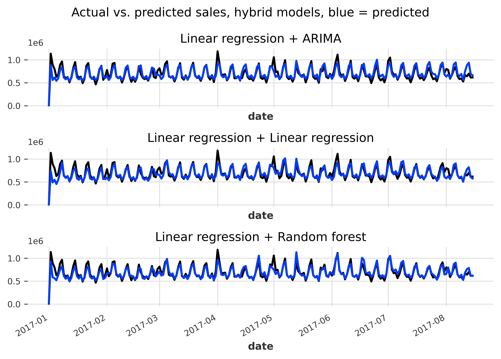
The performance of the 3 hybrids are similar overall, and it’s hard to see big differences from the plots.
The random forest did a better job of adjusting to some peaks and troughs, likely because it is able to select features and find interactions between predictors.
Still, certain large peaks are partially unaccounted for, especially the sharp recovery after January 1st, and the peaks at the start of April and May 2017. These may be due to factors not documented in our dataset. Or they may be related to commemorations for the earthquake in April 2016.
Backtesting / Historical forecasts
We can retrieve the historical forecasts for model 2 as we did for model 1, and add them to model 1’s historical forecasts to retrieve historical forecasts of the hybrid model.
Keep in mind we performed time decomposition by fitting model 1 on 2013-2016 and retrieving the fitted residuals for 2013-2016.
This will bias the historical forecasts for 2013-2016, so they shouldn’t be interpreted as reliable out-of-sample validation.
2017 does not suffer from this issue, as 2017 time decomposed sales were predicted out-of-sample.
As before, we’ll start by feeding the full year of 2013 as our initial training data, and expand our training window by 1 day in each iteration.
# Retrieve historical forecasts & residuals for linear + random forest# Fit scaler on 2013scaler.fit(ts_lagscovars[:365])# Predict historical forecasts for 2014-2017pred_hist2 = model_forest.historical_forecasts( trafo_log(ts_decomp), future_covariates = scaler.transform(ts_lagscovars), start =365, stride =1, verbose =True) + ts_preds1[365:]# Retrieve residuals for 2014-2017res_hist2 = trafo_log(ts_sales[365:]) - pred_hist2# Score historical forecasts for linear + random_forestperf_scores(trafo_log(ts_sales[365:]), pred_hist2, model="Linear + random forest")
Model: Linear + random forest
RMSE: 60491.8832
RMSLE: 0.0922
MAPE: 6.292
--------
With model 1, the overall historical forecasts performed considerably worse than the 2017 predictions. With the hybrid, the historical forecasts seem to have performed slightly better than the 2017 predictions. Again, this is partly misleading due to the way we performed time decomposition, but the improvements from accounting for cyclical effects in 2014-2015 are likely a factor too.
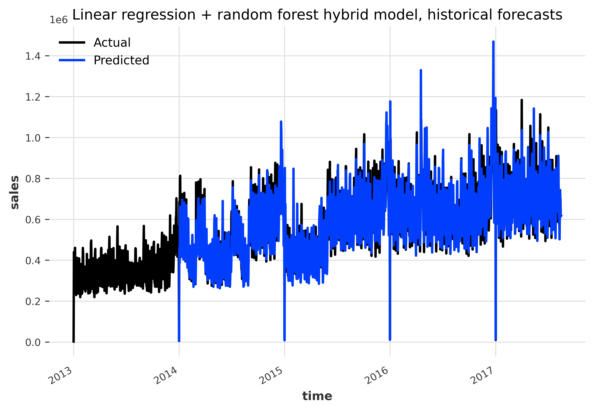
As we see from the historical forecasts plot, the cyclical fluctuations in 2014 and H1 2015, which were mostly unaccounted for in model 1, are matched nicely with the hybrid model. The peaks and troughs in the rest of the data are also matched better.
Residuals diagnosis & stationarity
We can diagnose the residuals of the hybrid model and test their stationarity.
Overall, the residuals seem much closer to stationary.
There are a few particularly large residuals, especially in 2014-2015, and at year starts.
The distribution of residuals is more centered around 0, with smaller extreme values. This time, the extreme values are well-balanced between positive and negative. It’s still possible to say the models underpredict a bit more than they overpredict. The opposite would be more preferable.
The ACF and PACF plots display almost no significant autocorrelation, except for a weak autocorrelation with lag 1.
# Stationarity tests on hybrid model residualsprint("KPSS test p-value: "+ stationarity_test_kpss(res_hist2)[1].astype(str)) # Null rejected = data is non-stationaryprint("ADF test p-value: "+str(stationarity_test_adf(res_hist2)[1])) # Null rejected = data is stationary around a constant
KPSS test p-value: 0.04035267060926849
ADF test p-value: 0.0
The stationarity tests are still conflicting:
The p-value for the KPSS test is smaller than 0.05, leading us to reject the null hypothesis of stationarity around a constant. However, the p-value is much larger than the KPSS test on model 1 residuals, so we are fairly close to stationarity.
The p-value for the ADF test is 0, rejecting the null hypothesis of the presence of an unit root. This implies the data is stationary around a constant.
Conclusion
In part 1 of this analysis, we were able to predict national daily sales, aggregated across all categories and stores, pretty well.
In the end, a hybrid model combining linear regression for the time effects, and random forest regression for the remainder, gave us the best results.
However, the second model’s relative improvement was fairly small, as the first model already performed very well.
This means the time & seasonality effects in our data were much stronger than any “unexpected” cyclicality, which is what we’d intuitively expect for supermarket sales.
Still, there was considerable cyclicality in 2014 and H2 2015, which showed up as relatively large values in the residuals of model 1. Applying autoregression in model 2 helped us adjust for these.
Autoregression is more “reactive” than predictive: It likely won’t predict a first sudden fluctuation before it happens, but that fluctuation will enter the model as a predictor in the next period, and allow the model to adjust for the following periods.
In part 2, we will attempt to make a competition submission, predicting the daily sales for every store & every category combination. That makes 33 categories across 54 stores, a total of 1782 series to generate a prediction for.
In part 1, with only one series to predict, we were able to perform exploratory analysis and carefully tailor our models, especially for time decomposition. It’s also generally easier to predict more aggregated series, as they are less noisy: The national sales likely fluctuate much less compared to sales in one store or category.
In part 2, we will have to come up with a strategy that will simplify our work, while still yielding good predictions. The 33 product categories likely have very different seasonality patterns. We’ll likely rely on more “automatic” models that are able to derive time effects & seasonality, and ideally model them along with autocorrelation and any covariate effects in one go instead of using hybrids or tailored feature sets.
We’ll also explore the topic of hierarchical reconciliation: Making sure our predictions are coherent within the levels of hierarchy. There are several methods to reconcile predictions in a hierarchy, and it can even improve prediction accuracy.